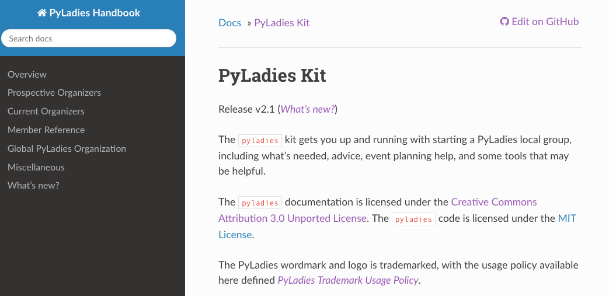
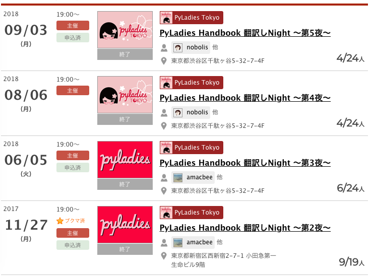
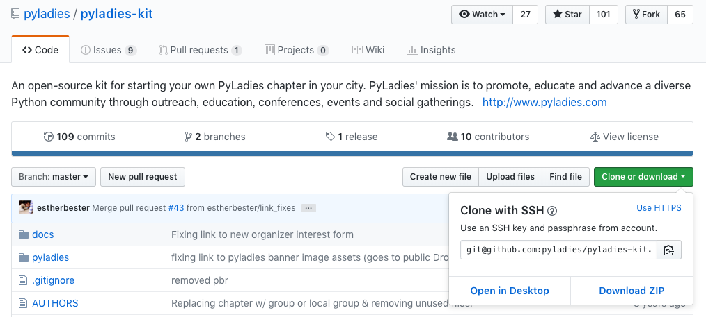
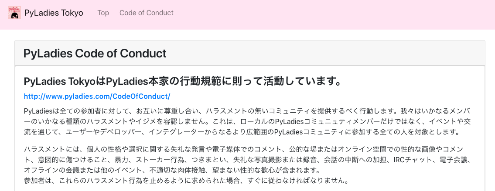

鉄は熱いうちに打て
=============================
PyLadies Handbookの日本語化¶
2018-12-02
PyLadies Advent Calendar 2018 - Adventar の2日目です。
2018-11-28に SphinxCon JP 2018 に参加しました を書きましたが、そこでの発表した内容を紹介します。
PyLadies Tokyo とは¶
PyLaiesの紹介¶
PyLadiesは，San Franciscoに本部があるPythonが好きな女性を結ぶ国際的なコミュニティです。
PyLaiesはPython界隈でマイノリティーである女性の支援を行い、各Pythonコミュニティーとの架け橋となることを目的としています。 PyLaidesにはいくつかの守るべきルールがあります。
PyLadies Tokyoは、PyLadiesの東京支部として活動しています。
PyLadies Handbook¶
本家PyLadiesにルールをまとめたPyLadiesのハンドブック PyLadies Handbook があります。
PyLadies Handbookに書いてあること¶
ローカルPyLadiesの作り方
PyLadiesの運営方法
PyLadiesの行動規範
ロゴなどの権利
どんな人が参加できるか
翻訳プロジェクト発足¶
特に本家のページはもちろん英語ですが、メンバーやこれから参加を考えている人にも読んでほしいと思い、翻訳を開始しました。 最終的には 翻訳して、本家に取り込んでもらう のが目標です。
まず、第１段階として 行動規範 と、 ハラスメントを受けた場合の対処法 の部分をPyCon JP 2018までに翻訳しました。
翻訳しNight!¶
翻訳しNightというイベントを定期的に開いてみんなで翻訳しています。
着手¶
以下の方法で、翻訳をはじめました。
GitHubにリポジトリを作る
本家の英文をコピー（本家、rstなのにmdにコピー）
issueで範囲、担当を指定
英文の真下に1行ずつ日本語を書いて、担当ページが終わったらPRを作る
PR上でレビューと修正を行う

問題点¶
日本語のドキュメントとして整形するときに手動でコピペが必要
本家に取り込んでもらう時、どうやってやるのか決めていない
レビューがやりづらい: PRでレビューするのですが、文書が1行ずつに分かれていて読みにくかったです
GitHubを使えない人が参加しにくい: 集まってもGitHubの使い方を説明して終わることもありました。
Sphinxからpoファイル作ってTransifexで翻訳してから、Sphinxに戻した話¶

生poファイルで翻訳しづらい問題¶
poファイルは生ファイルなので、翻訳したり、レビューしたり議論したりがし辛いです。
# 283ad006df7242c59abb816f7d85b03f
#: ../../about.rst:4
msgid "About"
msgstr "" ←ここに翻訳を書く
# 55b61f6216ec4b70a10a738011d5cc82
#: ../../about.rst:6
msgid ""
"We are an international mentorship group with a focus on helping more "
"women become active participants and leaders in the Python open-source "
"community. Our mission is to promote, educate and advance a diverse "
"Python community through outreach, education, conferences, events and "
"social gatherings."
msgstr "" ←ここに翻訳を書く
Transifexで翻訳¶
Transifexを利用する前の準備¶
Transifexを利用すると、生poファイル編集より便利そうです。Transifexを利用して翻訳を進めることにしました。
本家のGitHubからpyladies-kitを取得（clone）¶
Sphinxをインストール¶
$ pip install Sphinx
$ pip install sphinx-intl
docs/ に移動
conf.pyのファイルの最後に追加
locale_dirs = ["locale"]
language = "ja"
または、 sphinx-build のオプションで指定 sphinx-build -M html -D language=ja -D locale_dirs=locale
potファイルを作成するコマンドを実行
$ make gettext
_build/locale の下に *.pot ファイルができている
potファイルからpoファイルを作る
$ sphinx-intl update -p _build/locale -l ja

Sphinxプロジェクトでの作業¶
翻訳後のファイルをTransifexからダウンロード
Sphinxプロジェクトのlocale/ja/LC_MESSAGES/ に翻訳したpoファイルをコピー
htmlファイルを作成する
$ make html
完成¶
目標の 行動規範 と、 ハラスメントを受けた場合の対処法 の部分の翻訳は終了しました。
https://pyladiestokyo.github.io/coc/index.html
本家に取り込まれる日までがんばります。
明日は¶
PyLadies Advent Calendar 2018 - Adventar の3日目は、 @maya_t9 さんです